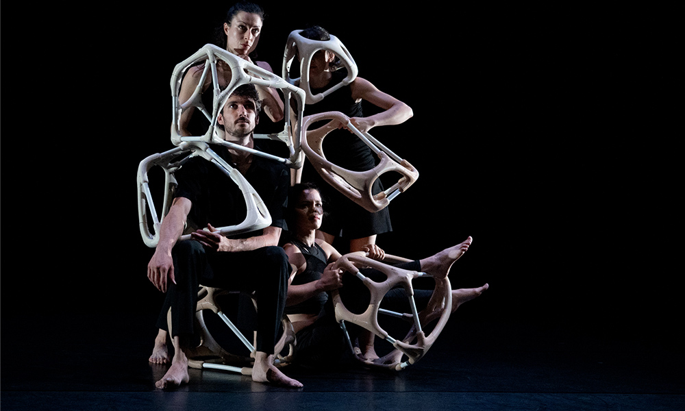

Formé à l'ESA, je couvre l'ensemble du chemin — de la définition paramétrique à l'objet fabriqué. Décors pour le luxe, mobilier de scène, collections hybrides et environnements immersifs. En atelier comme en remote, entre Marseille et Paris.
Modélisations et usinage pour un décor de vitrine. Formes conçues pour être imprimées en atelier ou pour du fraisage numérique bois ou polystyrène. Réalisation de plans CNC bois et polystyrène, découpe laser. Suivi d'impressions 3D PLA. — Via Atelier 20point12.
Modélisations et usinage pour un décor de vitrine. Travail sur Rhino, ZBrush et définitions Grasshopper pour impression 3D PLA et SLA, CNC polystyrène. Plans d'usinage numérique bois, polystyrène et découpe laser. — Via Atelier 20point12.
Design, modélisation et édition de plans de fabrication en CNC. Structure interne réalisée à la découpe CNC. Matériaux : bois, PLA, LED, stratifié résine, miroir sans tain. — Via Atelier 20point12.
Modélisation pour une collection de mobilier. Création d'une définition Grasshopper pour un modèle évolutif et adaptatif. Conseil en design — Saket Sethi Design, 2023.
Conception et modélisation 3D pour la présentation d'une installation vidéo de Sabrina Ratté durant le salon Watches and Wonders 2022 à Genève. Conception et plans d'esquisse pour la sculpture centrale et les alcôves comprenant les sculptures 3D. Prototype de sculpture cinétique réalisé par Animatronix. — Via Atelier 20point12.
Conception, modélisation et suivi de réalisation pour l'ensemble du décor du film. Dessins de sculptures en résine, sculptures néon et plans pour les artisans peintres et sculpteurs. Exposé au Centre Pompidou-Metz, 2022. Photo Marc Domage. — Via Atelier 20point12.

Conception scénographique complète — de l'esquisse au plateau.

Conception et fabrication de dispositifs pour la pièce chorégraphique d'Annie Hanauer. Formes organiques et biomimétiques développées par modélisation paramétrique, conçues pour interagir avec le corps dansant et redéfinir la présence de l'objet sur scène.
Expérience immersive en réalité virtuelle pour la première de l'album Photophobia à Kampnagel, Hambourg. Un vidéoclip permettant d'évoluer dans un monde de mangrove imaginé pour trois pistes (Pandemonium, In Short, Self-Abolition) — du marécage futuriste sombre à un espace kaléidoscopique. Avec Sanni Est (direction artistique, concept & musique) et alpharats (programming & VFX).
Studio basé au Maroc explorant la jonction entre savoir-faire artisanal et fabrication numérique — pour habiter le corps autrement.
Recherche hybride en trois strates : conception paramétrique, production digitale, expérimentation physique. Le projet qui illustre le mieux le pipeline complet — du fichier Grasshopper à la vidéo de défilé final.
En parallèle, expérimentation physique : pièces d'impression 3D explorant la broderie et le perlage comme matière imprimée — modèles construits sur Grasshopper, pilotage slicer Bambu/Prusa. Chaque prototype est un objet autonome autant qu'un état intermédiaire du processus textile.
Vases et objets imprimés en 3D. Boutons sur-mesure pour ateliers de caftans de luxe. Moules conçus pour les artistes — de la définition paramétrique à la pièce finie.
Impression 3D sur tulle, perlage algorithmique, broderie paramétrique. Expérimentations sur matériaux biosourcés au Maroc. Pont entre ateliers locaux et outils numériques avancés.
Body Architecture 2.0 — masques génératifs (workshop Filippo Nassetti). Workshop d'architecture futuriste avec Amir Fakhrghasemi. Défilé digital comme forme de recherche sur la présence du vêtement.
Collaboration avec artisans marocains sur des motifs conçus algorithmiquement et brodés à la main. Dialogue entre la définition Grasshopper, l'outil et la transmission du geste.
Disponible — missions freelance, intermittence du spectacle, portage salarial. Marseille · Paris · remote.